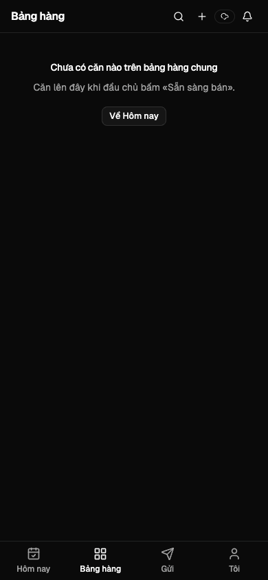
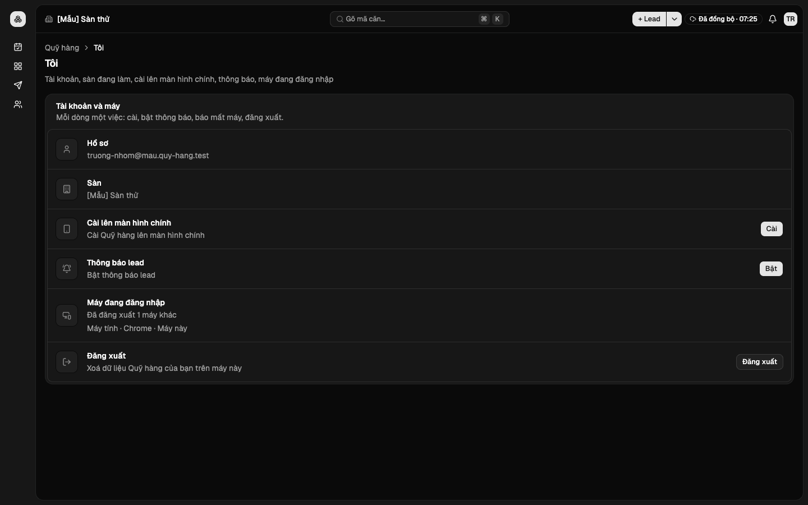
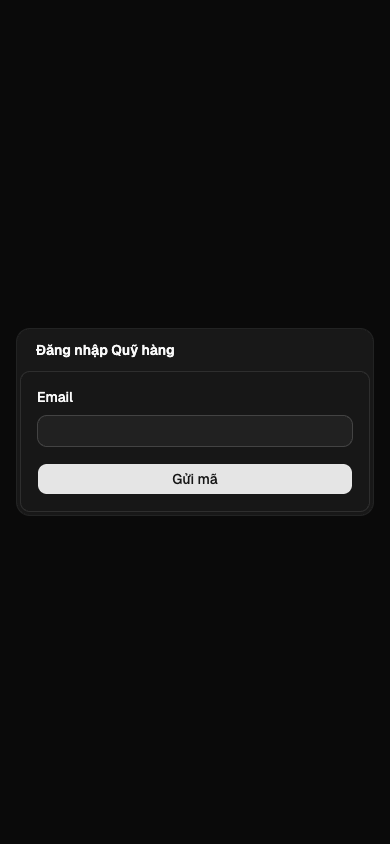

Người dùng điện thoại cài Quỹ hàng lên màn hình chính, bật thông báo; đăng xuất hay báo mất máy thì dữ liệu trên máy bị xoá sạch
Vì sao làm
Luật 32; Kiến trúc §7 Số đo hai tuần thử gần nhất (Tham chiếu §11): Số lần mất mạng và thao tác lúc mất mạng trên điện thoại; tỉ lệ thao tác trên máy tính / điện thoại theo vai — ngưỡng số đặt trước khi thử.
Đã hứa
- AC-1 — Given người đã đăng nhập ở bất kỳ vai nào (đầu chủ, đầu khách, trưởng nhóm, telesales, quản trị sàn), When mở
- AC-2 — Given thiết bị ở mỗi trạng thái cài — đang chạy từ màn hình chính; trình duyệt đã phát lời mời cài; iPhone hay
- AC-3 — Given thiết bị ở mỗi trạng thái thông báo mà dải bật Hôm nay phân loại (chưa bật, đã bật, máy chủ chưa lưu,
- AC-4 — Given người còn n thay đổi chưa gửi (n ≥ 0), When bấm «Đăng xuất» ở tab Tôi, Then đi đúng đường đăng xuất đã có:
- AC-5 — Given người có các phiên còn sống trên k máy (k ≥ 1), When mở tab Tôi, Then dòng máy đang đăng nhập liệt đúng k
- AC-6 — Given người có phiên trên máy A (đang bấm) và các máy B, C, mỗi máy một đăng ký thông báo, người là thành viên
- AC-7 — (cross-layer) Given máy B vừa bị báo mất, trình duyệt B có kho của người bị báo (bản kéo, lịch sử, thay đổi chưa
- AC-8 — Given phiên trên máy hết hạn hay bị xoá không qua «Báo mất máy», When bộ đồng bộ gửi hay kéo, Then máy chủ trả 401
- AC-9 — Given migration mới của bảng dấu, When chạy `npm run db:migrate` và bộ kiểm cách ly, Then bảng nằm ở schema
- AC-10 — Given máy B, C bị báo từ A, B có đăng ký thông báo và service worker đang cài, C không bật thông báo, When máy chủ
Thiết kế
_acceptance/tab-toi/design.md
Quyết định
- 2026-11-03 · Người · seal · gate1 —
- 2026-11-03 · Máy · approach · S1 — Đã tra tri thức: Người dùng điện thoại cài Quỹ hàng lên màn hình chính, bật thông báo; đăng xuất hay báo mất máy thì dữ liệu trên máy bị xoá sạchKho đã khai tri_thuc — bước thiết kế tra trang trước khi chọn.
- 2026-11-03 · Máy · approach · S1 — Hỏi-1: «Báo mất máy» là một nút đăng xuất mọi máy khác của người và gỡ mọi đăng ký thông báo khác máy đang bấm (khuyến nghị), hay chọn từng máy trong danh sách?Đăng ký thông báo hôm nay không gắn với phiên (migration 018), nên chọn từng máy cần thêm cột và bước khớp; nghĩa sản phẩm của nút là của chủ kho (design.md §3).
- 2026-11-03 · Máy · approach · S1 — Hỏi-2: máy bị báo xoá kho khi máy chủ trả mã riêng «máy bị báo mất» (khuyến nghị, cần bảng dấu mới), hay xoá kho mỗi lần hết phiên?dong-bo-tu-lanh AC-2 đã ký giữ thay đổi chờ khi 401, nên xoá mỗi lần hết phiên lật một điều đã ký; giữ nó thì phải phân biệt máy bị báo (design.md §4).
- 2026-11-03 · Máy · approach · S1 — Danh sách máy và thu phiên đi qua better-auth trong tiến trình (listSessions, revokeOtherSessions), không viết bảng phiên riêng.ADR-0005 giao danh tính cho better-auth; bảng identity.session đã có userAgent, updatedAt (migration 002).
- 2026-11-03 · Máy · approach · S1 — Thân «báo mất máy» mang pushEndpoint của máy đang bấm để giữ lại đúng đăng ký ấy, gỡ các đăng ký khác dưới luật theo dòng của từng sàn người là thành viên.Cùng khuôn với thân đăng xuất của hàng 26 (registerPushSignOut) và lời gọi quay số của goi-tu-may-tinh.
- 2026-11-03 · Máy · approach · S1 — Hồ sơ là T3: thêm một migration trong packages/db (bảng dấu máy bị báo), số do giám sát giữ chỗ (yêu cầu H-6).risk_tiers.t3_paths khai packages/db/**; Hỏi-2 theo khuyến nghị cần bảng mới.
- 2026-11-03 · Máy · descope · S1 — bỏ design-pass — khối đích settings-2 chủ kho đã chọn trên trang so sánh 02/11 (vo-va-ia.md), màn là danh sách dòng cài đặt; E1b chụp bản thật ở S4vo-va-ia.md dòng «Tôi (điện thoại)» đã chốt khối và các dòng; không có lựa chọn bố cục nào còn mở.
- 2026-11-03 · Máy · descope · S1 — KHÔNG làm xoá dữ liệu trên máy bị báo mà không bao giờ chạm máy chủ nữa — ghi giới hạn đã biết.Web không có lệnh xoá từ xa khi trang không mở; Kiến trúc §7 dời ngoại tuyến bền sang vỏ app gốc.
- 2026-11-03 · Máy · approach · S1 — Hỏi-3: ngoài đường «chạm máy chủ thì xoá», máy chủ đẩy tin «xoá máy» (tag xoa-may) tới mọi đăng ký thông báo khác máy đang bấm rồi mới gỡ (khuyến nghị), hay chỉ đường chạm máy chủ?Phản biện context sạch P0: lối đẩy lệnh xoá còn sống — service worker xoá được kho mà không cần mở trang, tin vừa khít khuôn bốn khoá của push_outbox (design.md §4).
- 2026-11-03 · Máy · approach · S1 — Hỏi-4: máy bị báo chỉ xoá kho của người bị báo (khuyến nghị) hay mọi kho Quỹ hàng trên trình duyệt?Phản biện context sạch P1: «đăng xuất mọi máy khác» chạm cả máy dùng chung ở văn phòng; AC-4 đã giữ kho của người khác khi đăng xuất.
- 2026-11-03 · Máy · approach · S1 — Hạn dấu máy bị báo bằng lúc thu cộng hạn phiên đọc từ hằng SESSION_EXPIRES_SEC, không chép số.Phản biện P1: dấu hết trước phiên thì máy mất được giữ kho; phiên đã thu không trượt hạn được nữa nên lúc thu cộng hạn phiên phủ trọn đời cookie.
- 2026-11-03 · Máy · descope · S1 — KHÔNG làm xoá dữ liệu trên máy bị báo không bật thông báo và không bao giờ chạm máy chủ nữa — ghi giới hạn đã biết.Máy không có đăng ký đẩy và không mở trang thì web không còn đường nào chạm tới; Kiến trúc §7 dời ngoại tuyến bền sang vỏ app gốc.
- 2026-11-03 · Máy · revisit · S3 — Mở lại bước phân kỳ giao diện: màn Tôi là màn đầu của nhóm khuôn mới «toi», nên luật kho (vo-va-ia §2 «Ba lối», ADR-0019) đòi trang ba lối mà dòng sổ «bỏ design-pass» ở S1 đã bỏ qua; dựng ba lối Trong kho · ReUI · Vẽ mới, khuyên ReUI (settings-2), xin chủ kho chọn một chạm.Nhóm cai-dat-san ghi rõ không dùng cho «Tôi»; bài quét khuôn đỏ «màn ngoài bản đồ» nếu không có nhóm (design/patterns/cai-dat-san.md, docs/design/vo-va-ia.md §2).
- 2026-11-03 · Máy · approach · S2 — Hàm loại máy đặt ở packages/core (thiet-bi) để API và màn Tôi dùng chung một bảng, thay vì mỗi bên một bản.E5 đo loại máy trong thân API, E5b đo cùng ma trận ở web; hai bản sẽ lệch nhau.
- 2026-11-04 · Máy · approach · S3 — Chủ kho chọn lối ReUI cho màn Tôi: dựng theo khối settings-2 đã chuyển thể, đúng khối đích của vo-va-ia.md.Trả lời một chạm «ReUI» của chủ kho trên trang ba lối _acceptance/tab-toi/ba-loi/index.html; mã đang dùng loi="reui" ở apps/web/src/app/(app)/me/page.tsx.
- 2026-11-04 · Máy · fix · S4-r1 — Trước lượt chấm, chạy thử kịch bản E1b, E7c trên trình duyệt thật bắt ba lỗi và đã vá: (1) bước chặn đầu của trang xoá cookie của phiên bị báo nên màn đăng nhập không còn biết máy bị báo và không xoá kho; (2) đường dẫn trần ?bi-bao-mat=1&u=… từ nơi khác xoá được kho của người khác; (3) câu báo bị cắt một dòng trên điện thoại, nay tách tiêu đề «Máy này đã bị báo mất» và mô tả «Dữ liệu Quỹ hàng trên máy đã xoá».Curl không giữ cookie nên bài kiểm máy chủ không thấy lỗi (1); vá ở apps/web/src/lib/session-refresh.ts (giám sát duyệt H-12), nguoiCanXoa ở lib/sync/may-bi-bao.ts, bài kiểm mới ở packages/api/test-db/tab-toi/thiet-bi.test.ts và lib/sync/may-bi-bao.test.ts có chiều đỏ.
- 2026-11-04 · Máy · fix · S4-r1 — Lượt chấm 1 trả lại vì bài khuôn (E10), bộ kiểm ui-lint và lint; gốc chung là bản vá câu báo máy bị báo mất truyền khe của TrangThai bằng cú pháp rải và thêm một chỗ TrangThai thứ hai, nay ghi khe tường minh và gộp về một chỗ.Bộ đọc khuôn (packages/ui-lint, ban-do-khuon) đòi khe title ghi rõ và bảng đếm cố định năm chỗ TrangThai; 35 ca ui-lint đỏ cùng một lỗi ở apps/web/src/app/(auth)/login/may-bi-bao.tsx.
- 2026-11-04 · Máy · revisit · S4-r1 — Gỡ trang ba lối /proto/tab-toi sau khi chủ kho chọn lối ReUI (sáu ảnh vẫn ở _acceptance/tab-toi/ba-loi/), bỏ nó khỏi bản đồ nhóm toi và ngoại lệ trang tạm, rồi ghim lại bản đồ khuôn của hồ sơ (khuon-nap.json) theo bản đồ đã duyệt.Lệnh khuôn của kit 2.37.0 xét «một tệp thuộc hai nhóm» không đọc ngoại lệ, mà nhận diện của trang tạm phủ mọi màn dưới (app), nên trang ba lối mới luôn đỏ E10; bản ghim S1 có trước khi nhóm toi ra đời ở S3 (dòng sổ mở lại bước phân kỳ) và trước sửa trang-tam được duyệt ở H-11.
- 2026-11-04 · Máy · approach · S4-r1 — Lần fetch origin của giám sát lúc ~00:03Z không dời mốc lượt chấm 1: origin/main vẫn a7779e35 từ 15:55Z, s4-args sinh 00:04:44Z với diffBase 07c3022 (tổ tiên của merge-base 962a8ec); không chấm lại vì việc này.Giám sát yêu cầu kiểm mốc so sánh sau lượt; đối chiếu reflog origin/main và s4-args.json.
Bằng chứng
Các eval
| Eval | Tiêu chí | Loại | Verdict | run_id | verified_at |
|---|---|---|---|---|---|
| E1 | AC-1 | test | PASS | minted-tab-toi-E1-r1 | 2026-11-04T00:04:44Z |
| E1b | AC-1 | ui-check | PASS | minted-tab-toi-E1b-r2 | 2026-11-04T00:22:22Z |
| E2 | AC-2 | test | PASS | minted-tab-toi-E2-r1 | 2026-11-04T00:04:44Z |
| E3 | AC-3 | test | PASS | minted-tab-toi-E3-r1 | 2026-11-04T00:04:44Z |
| E4 | AC-4 | test | PASS | minted-tab-toi-E4-r1 | 2026-11-04T00:04:44Z |
| E5 | AC-5 | test | PASS | minted-tab-toi-E5-r1 | 2026-11-04T00:04:44Z |
| E5b | AC-5 | test | PASS | minted-tab-toi-E5b-r1 | 2026-11-04T00:04:44Z |
| E6 | AC-6 | test | PASS | minted-tab-toi-E6-r1 | 2026-11-04T00:04:44Z |
| E7 | AC-7 | test | PASS | minted-tab-toi-E7-r1 | 2026-11-04T00:04:44Z |
| E7b | AC-7 | test | PASS | minted-tab-toi-E7b-r2 | 2026-11-04T00:22:22Z |
| E7c | AC-7 | ui-check | PASS | minted-tab-toi-E7c-r2 | 2026-11-04T00:22:22Z |
| E8 | AC-8 | test | PASS | minted-tab-toi-E8-r1 | 2026-11-04T00:04:44Z |
| E9 | AC-9 | test | PASS | minted-tab-toi-E9-r1 | 2026-11-04T00:04:44Z |
| E10 | AC-1 | script | PASS | minted-tab-toi-E10-r2 | 2026-11-04T00:22:22Z |
| E11 | AC-10 | test | PASS | minted-tab-toi-E11-r1 | 2026-11-04T00:04:44Z |
| E11b | AC-10 | test | PASS | minted-tab-toi-E11b-r1 | 2026-11-04T00:04:44Z |
Chi tiết từng eval
PASS E1 · test
AC-1: Given người đã đăng nhập ở bất kỳ vai nào (đầu chủ, đầu khách, trưởng nhóm, telesales, quản trị sàn), When mở
PASS E1b · ui-check
AC-1: Given người đã đăng nhập ở bất kỳ vai nào (đầu chủ, đầu khách, trưởng nhóm, telesales, quản trị sàn), When mở
PASS E2 · test
AC-2: Given thiết bị ở mỗi trạng thái cài — đang chạy từ màn hình chính; trình duyệt đã phát lời mời cài; iPhone hay
PASS E3 · test
AC-3: Given thiết bị ở mỗi trạng thái thông báo mà dải bật Hôm nay phân loại (chưa bật, đã bật, máy chủ chưa lưu,
PASS E4 · test
AC-4: Given người còn n thay đổi chưa gửi (n ≥ 0), When bấm «Đăng xuất» ở tab Tôi, Then đi đúng đường đăng xuất đã có:
PASS E5 · test
AC-5: Given người có các phiên còn sống trên k máy (k ≥ 1), When mở tab Tôi, Then dòng máy đang đăng nhập liệt đúng k
PASS E5b · test
AC-5: Given người có các phiên còn sống trên k máy (k ≥ 1), When mở tab Tôi, Then dòng máy đang đăng nhập liệt đúng k
PASS E6 · test
AC-6: Given người có phiên trên máy A (đang bấm) và các máy B, C, mỗi máy một đăng ký thông báo, người là thành viên
PASS E7 · test
AC-7: (cross-layer) Given máy B vừa bị báo mất, trình duyệt B có kho của người bị báo (bản kéo, lịch sử, thay đổi chưa
PASS E7b · test
AC-7: (cross-layer) Given máy B vừa bị báo mất, trình duyệt B có kho của người bị báo (bản kéo, lịch sử, thay đổi chưa
ℹ duration_ms 1579.324583
PASS E7c · ui-check
AC-7: (cross-layer) Given máy B vừa bị báo mất, trình duyệt B có kho của người bị báo (bản kéo, lịch sử, thay đổi chưa




PASS E8 · test
AC-8: Given phiên trên máy hết hạn hay bị xoá không qua «Báo mất máy», When bộ đồng bộ gửi hay kéo, Then máy chủ trả 401
PASS E9 · test
AC-9: Given migration mới của bảng dấu, When chạy `npm run db:migrate` và bộ kiểm cách ly, Then bảng nằm ở schema
PASS E10 · script
AC-1: Given người đã đăng nhập ở bất kỳ vai nào (đầu chủ, đầu khách, trưởng nhóm, telesales, quản trị sàn), When mở
13 tệp giao diện ngoài bản đồ
PASS E11 · test
AC-10: Given máy B, C bị báo từ A, B có đăng ký thông báo và service worker đang cài, C không bật thông báo, When máy chủ
PASS E11b · test
AC-10: Given máy B, C bị báo từ A, B có đăng ký thông báo và service worker đang cài, C không bật thông báo, When máy chủ
Eval không phân biệt (Analyst)
Vòng verify
- Round 1: bo eval E1 den E11b chay lan dau, 7 muc ngoai hop dong duoc ghi lai trong review-findings.md; sua o commit cd8d9f47.
- Round 2: chay lai E7b, E10, E1b, E7c va cac lenh suite tren commit cd8d9f47; cac eval con lai mang tu round 1. Tat ca dat.
Tài nguyên
| Khối | Tác tử | Token đầu ra |
|---|---|---|
| S4 round 1 | 19 | 66.384 |
1 lượt chấm · tổng 66.384 token · 1 khối không đọc được
Giới hạn và ngoài hợp đồng
- Chọn từng máy để báo mất, đặt tên máy — sau bản đầu (Hỏi-1).
- Quản trị sàn thu phiên của thành viên, gỡ thành viên khỏi sàn — hàng cài đặt sàn.
- Sửa email, tên hiển thị, ảnh đại diện; sáng/tối ở tab Tôi (menu tài khoản máy tính đã có) — sau bản đầu.
- Xoá dữ liệu trên máy không bật thông báo và không bao giờ mở lại — không làm được trên web; chờ vỏ app gốc (Kiến trúc §9 bước 7).
- Dải bật thông báo ở Hôm nay và lời hướng dẫn cài lúc đăng nhập đầu — giữ như hàng 26, không đổi.
Giao
chưa ghi quan sát production
Giá trị
- Câu hỏi phép đo trả lời: [đề xuất] đã đạt «Người dùng điện thoại cài Quỹ hàng lên màn hình chính, bật thông báo; đăng xuất hay báo mất máy thì dữ liệu trên máy bị xoá sạch» chưa? — chưa đo
- Kết quả nào là SỐNG: [đề xuất] Người dùng điện thoại cài Quỹ hàng lên màn hình chính, bật thông báo; đăng xuất hay báo mất máy thì dữ liệu trên máy bị xoá sạch — chưa đo
- Kết quả nào là CHẾT: [đề xuất] chưa đạt «Người dùng điện thoại cài Quỹ hàng lên màn hình chính, bật thông báo; đăng xuất hay báo mất máy thì dữ liệu trên máy bị xoá sạch» khi hết timebox — chưa đo
- Timebox: … — chưa đo